6.1 Formation and Classification of Sedimentary Rocks
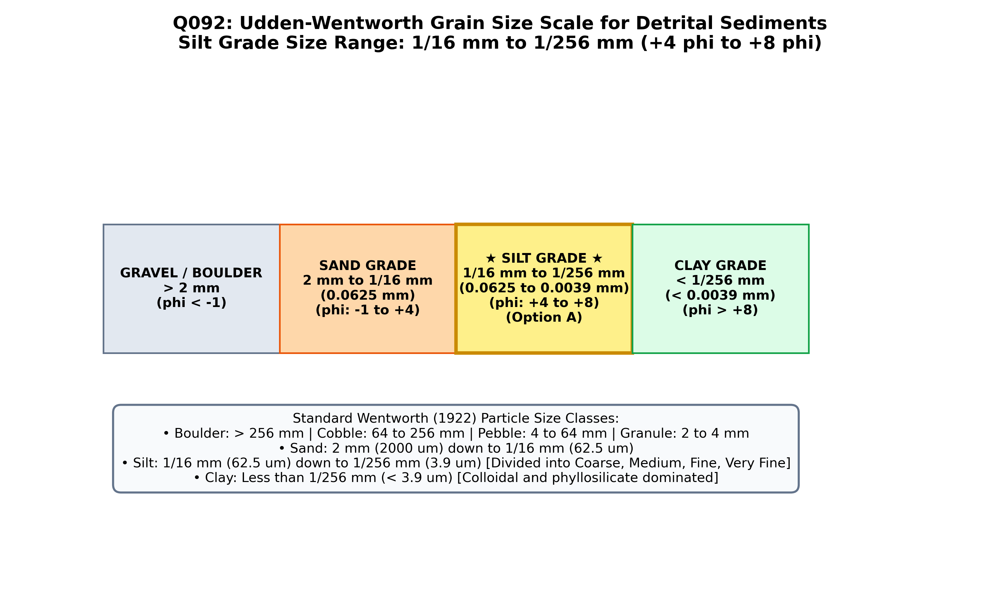

Sedimentary Rocks cover nearly 75% of the Earth's continental surface and form through four stages: (1) weathering of source rocks, (2) transportation by water, wind, or ice, (3) deposition in sedimentary basins, and (4) Diagenesis / Lithification—the transformation of loose sediment into solid rock via compaction (expulsion of pore water), cementation (precipitation of silica, calcite, or iron oxide in pores), and recrystallization.
- Hjulström Curve: Relates stream flow velocity to grain erosion, transport, and deposition. Fine sand ($0.2\text{--}0.5\text{ mm}$) is easiest to erode, whereas cohesive clay requires unexpectedly high velocity to resuspend once deposited.
- Dunham Carbonate Classification (1962): Classifies limestones by depositional fabric: Mudstone ($<10\%$ grains, mud-supported), Wackestone ($>10\%$ grains, mud-supported), Packstone (grain-supported with mud), Grainstone (grain-supported, mud-free), and Boundstone (organically bound reefs).
Classification: Divided into (i) Clastic (Detrital) Rocks composed of mechanical rock fragments—classified by grain size into Rudaceous ($>2\text{ mm}$: Conglomerate with rounded pebbles, Breccia with angular fragments), Arenaceous ($0.0625\text{--}2\text{ mm}$: Sandstone, Arkose, Greywacke), and Argillaceous ($<0.0625\text{ mm}$: Siltstone, Shale, Mudstone); and (ii) Non-Clastic Rocks formed by chemical precipitation (Evaporites like Rock Salt/Halite, Gypsum; Chert; Ironstones) or biochemical/organic accumulation (Limestone, Dolomite, Coal).
6.5 Sedimentary Structures and Rock Types
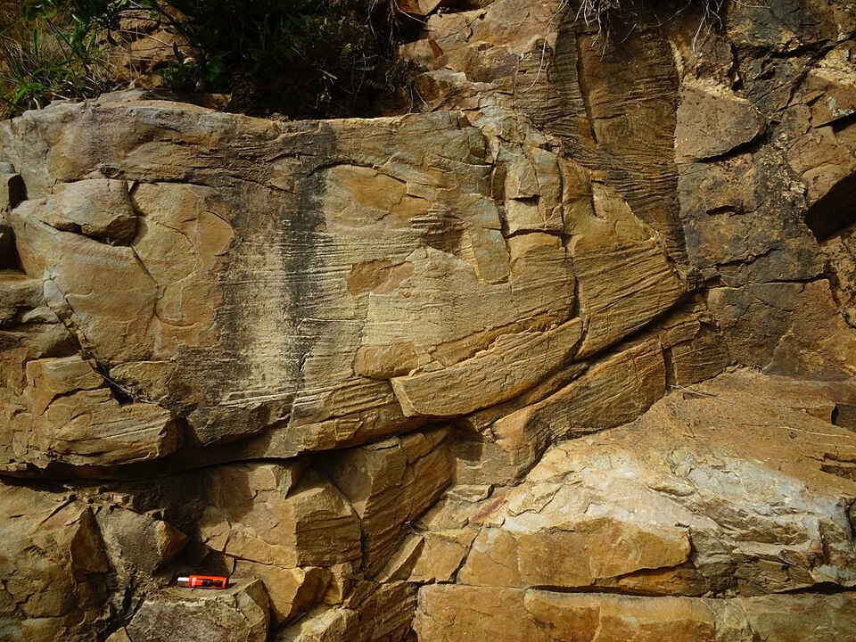


Sedimentary Structures. Diagnostic structures preserved during deposition include Stratification (Bedding), Lamination (layers $<1\text{ cm}$), Cross-Bedding / Current Bedding (inclined foreset laminae indicating paleocurrent direction and top-bottom orientation), Graded Bedding (progressive upward fining from coarse pebbles to fine mud within a single bed), Ripple Marks (symmetrical wave ripples vs. asymmetrical current ripples), and Mud Cracks (Desiccation Cracks).
Common Sedimentary Rocks. Sandstone (cemented quartz grains; siliceous sandstones are durable building stones), Arkose (feldspar-rich sandstone), Greywacke (poorly sorted dark sandstone with clay matrix), Shale (fine fissile clay rock; weak foundation), Limestone (calcite rock, raw material for cement; susceptible to karst solution), and Conglomerate (rounded pebbles in sandy matrix).
6.9 Metamorphism: Agents, Types, and Facies


Metamorphism is the solid-state mineralogical and textural transformation of pre-existing rocks in response to changes in temperature, pressure, and chemically active fluids, without complete melting. The chief agents are Heat ($150^\circ\text{--}800^\circ\text{C}$), Uniform (Lithostatic) Pressure, Directed Stress (Shear), and Chemically Active Fluids ($\text{H}_2\text{O}, \text{CO}_2$).
Metamorphic facies represent equilibrium mineral assemblages formed within specific $P\text{--}T$ fields regardless of bulk rock composition: Low-$P$ Contact (Albite-Epidote, Hornblende, Pyroxene, Sanidinite Hornfels); Medium-$P/T$ Barrovian Regional (Zeolite $\to$ Prehnite-Pumpellyite $\to$ Greenschist $\to$ Amphibolite $\to$ Granulite); and High-$P$/Low-$T$ Subduction (Blueschist $\to$ Eclogite).
Types of Metamorphism: Cataclastic / Dynamic (crushing along fault zones producing fault breccia and mylonite), Contact / Thermal (baking around igneous intrusions forming hornfels and skarns), Regional / Dynamothermal (mountain-belt high $P\text{--}T$ producing slates, phyllites, schists, and gneisses), Plutonic (deep crustal granulite/charnockite formation), Metasomatism (fluid chemical replacement), and Retrogressive Metamorphism.
6.14 Textures and Common Metamorphic Rocks

Metamorphic textures are either Foliated (parallel alignment of platy or elongated minerals perpendicular to maximum stress: Slaty Cleavage, Phyllitic, Schistose, and Gneissose Banding) or Non-Foliated (equidimensional interlocking crystals: Granoblastic / Saccharoidal).
Slate & Phyllite. Very fine-grained foliated rocks derived from shale; slate splits along flat cleavage planes into roofing tiles, while phyllite has a silky sheen of fine sericite.
Schist. Medium-to-coarse foliated rock dominated by parallel mica, chlorite, or hornblende flakes (e.g., mica schist, garnet schist). Weak and slippery along foliation planes in slopes and tunnels.
Gneiss. Coarse-grained banded rock with alternating light quartzo-feldspathic and dark biotite/hornblende layers (gneissose structure). Strong across foliation.
Quartzite & Marble. Non-foliated granoblastic rocks formed by recrystallization of sandstone ($H=7$, $UCS > 200\text{ MPa}$, hardest metamorphic rock) and limestone ($\text{CaCO}_3$, $H=3$, valued architectural stone), respectively.
Chapter Review Questions (K. M. Bangar)
1. Describe the formation of sedimentary rocks and classify them into clastic and non-clastic groups with examples.
2. Explain cross-bedding, graded bedding, ripple marks, and mud cracks, and state their geological significance.
3. What are the agents and types of metamorphism? Explain metamorphic zones and facies.
4. Distinguish between Slate, Schist, Gneiss, Quartzite, and Marble in terms of texture, mineralogy, protolith, and engineering behaviour.
Visual Reference Gallery (Clean Color Diagrams & Specimens)
Supplementary full-color diagrams from Winter, Perkins, Fossen, Boggs and high-resolution USGS/Wikimedia photographs replacing scanned textbook drawings.
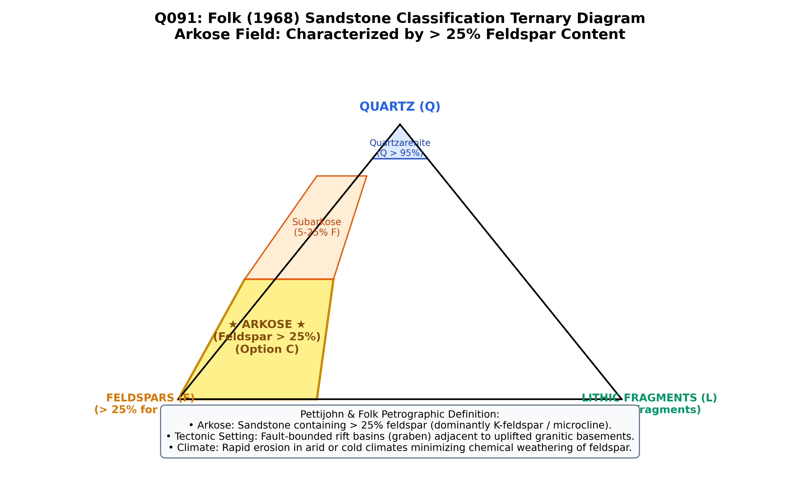
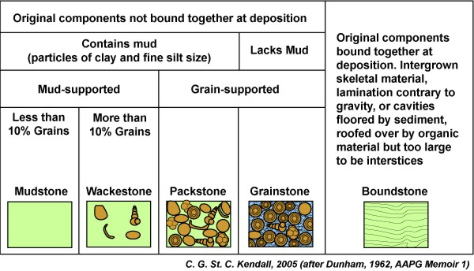
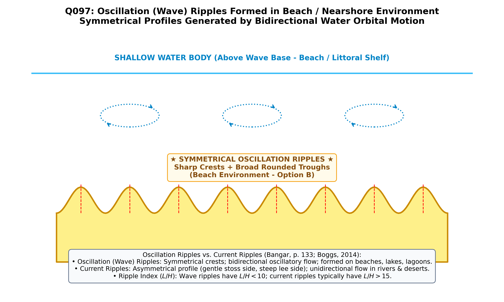

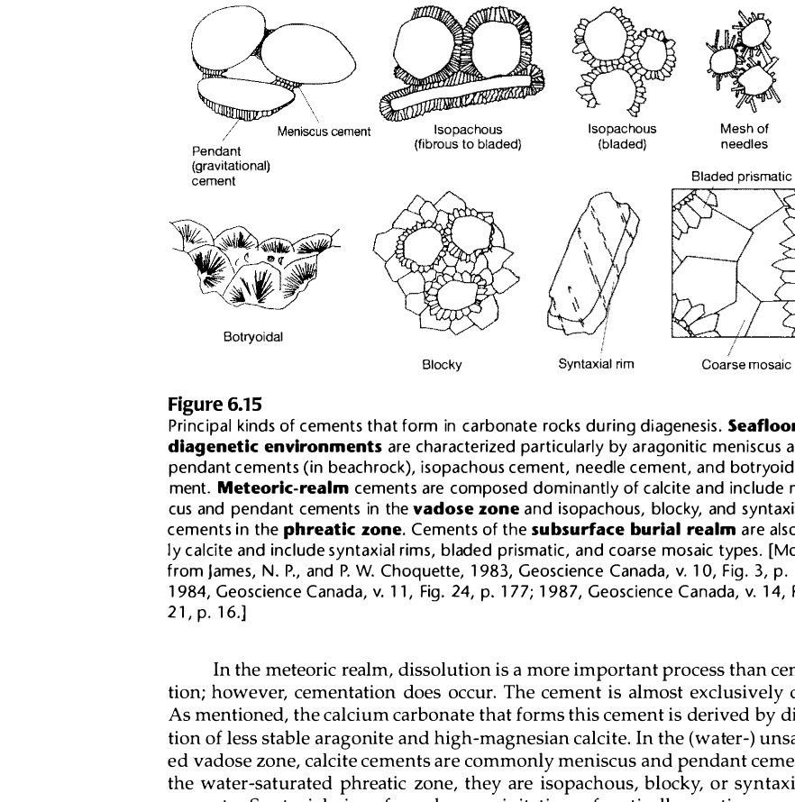
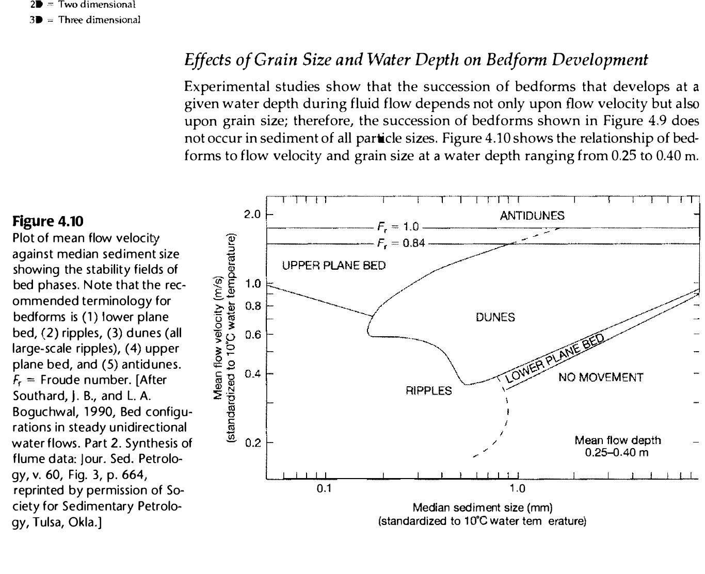
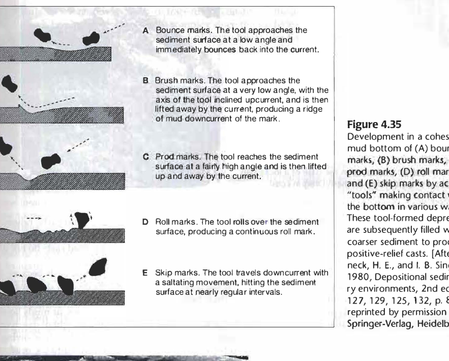
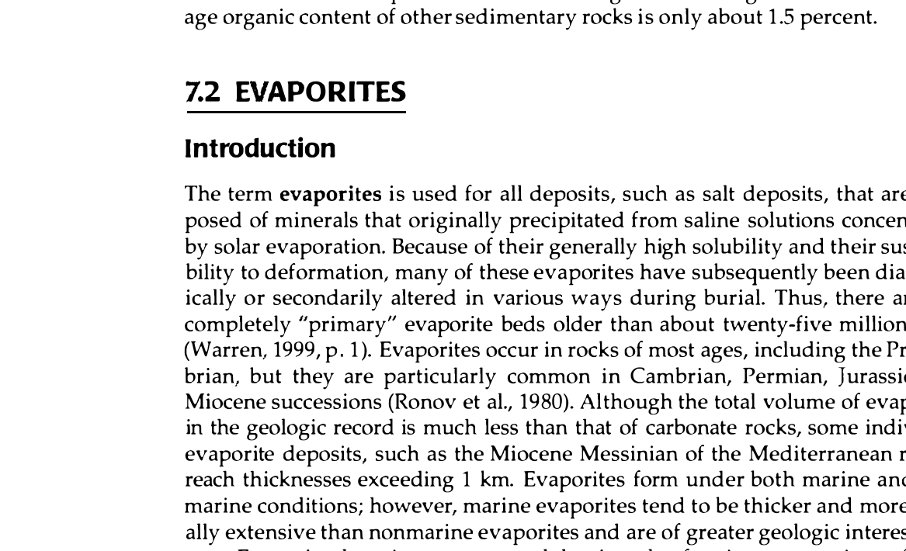
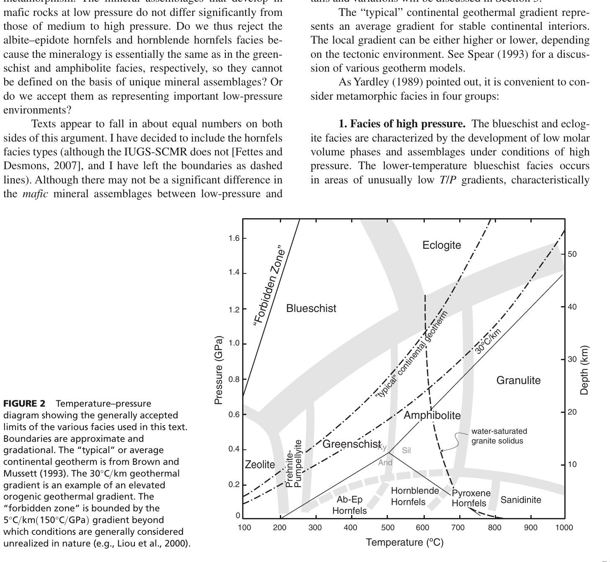
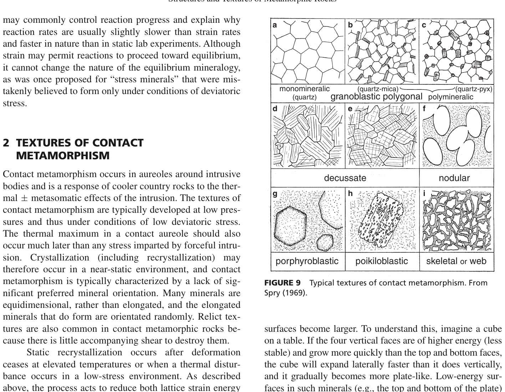

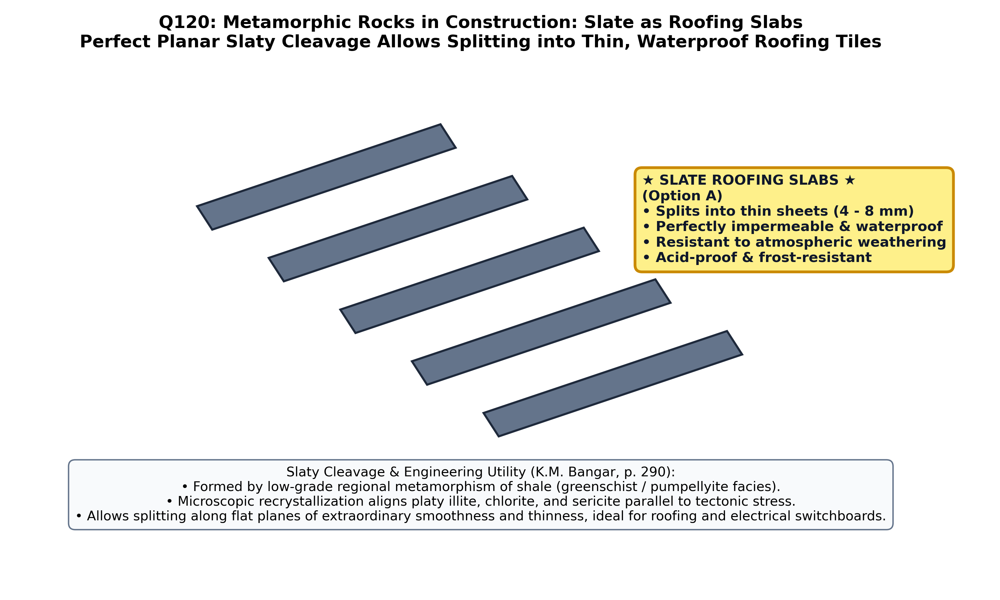